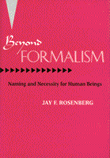

An established theory of reference challenged and an original "epistemic" alternative offered
An established theory of reference challenged and an original "epistemic" alternative offered


 An established theory of reference challenged and an original "epistemic" alternative offered
An established theory of reference challenged and an original "epistemic" alternative offered

|  |
Beyond FormalismNaming and Necessity for Human BeingsJay F. Rosenbergcloth EAN: 978-1-56639-118-4 (ISBN: 1-56639-118-0) |
"Rosenberg's text succeeds in its criticism of one of the most influential books in recent philosophy of language and points to a new approach.... It will generate a great deal of fruitful discussion within the field."
—Charles Landesman, Professor of Philosophy, Hunter College
Having viewed Saul Kripke's Naming and Necessity (1972) with skepticism from its inception, Jay Rosenberg now articulates his quarrels with Kripke's texts and views regarding necessity, reference, and belief. Rosenberg argues, for example, that Kripke's treatment of proper names as "rigid designators" allows no coherent account of how such names can function as they actually do in thought and communication.
Following his analyses of what he considers flawed "causal-historical" and "descriptivist" approaches, the author sketches a new "epistemic" account of names. Rosenberg's theory understands names not as devices for empirically related language users to objects, but as instruments for structuring and channeling the transmission and accumulation of descriptive content within a linguistic community.
Beyond Formalism concludes with a critical reassessment of the appropriate relationships among natural languages, mathematical formalisms, and philosophical commitments. The columniation of twenty years' reflection, this original, sophisticated book will be of interest and importance to philosophers, linguists, and others who work in the philosophy of language.
Excerpt available at www.temple.edu/tempress
"An important contribution to the ongoing controversy over the semantics of reference.... With exceptional patience and clarity, [Rosenberg] lays out the various elements of the Kripkean outlook...and offers an exceptionally intelligent and crisp view, well worthy of being widely disseminated to those interested in the philosophy of language and philosophical logic."
—Gerald A. Vision, Professor of Philosophy, Temple University
Preface
Dialectical Preliminaries
1. Essential Properties, Thought-Experiments, and Modal Intuitions
2. Rigid Designators, Proper Names, and Possible Worlds
3. Referential Alternatives: Names and Descriptions
4. Theoretical Desiderata for Nominal Reference
5. Idiolectic Sense, Confluence, and Isonymy
6. Reference and Belief in Epistemological Perspective
7. Logical Analysis in Epistemological Perspective
8. Roots and Roles of Logical Form
Notes
Works Cited
General Index
Name Index
Jay F. Rosenberg is Taylor Grandy Professor of Philosophy at the University of North Carolina. He is the author of several books, including The Thinking Self (Temple).
© 2015 Temple University. All Rights Reserved. This page: http://www.temple.edu/tempress/titles/1121_reg.html.